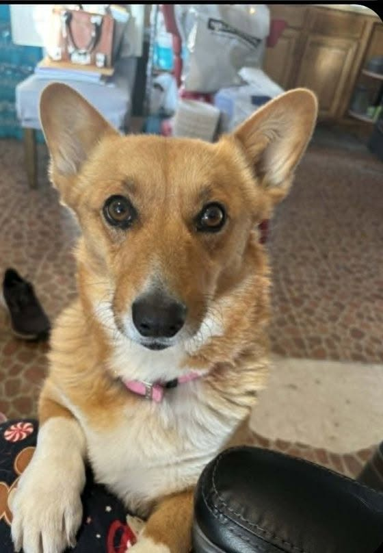
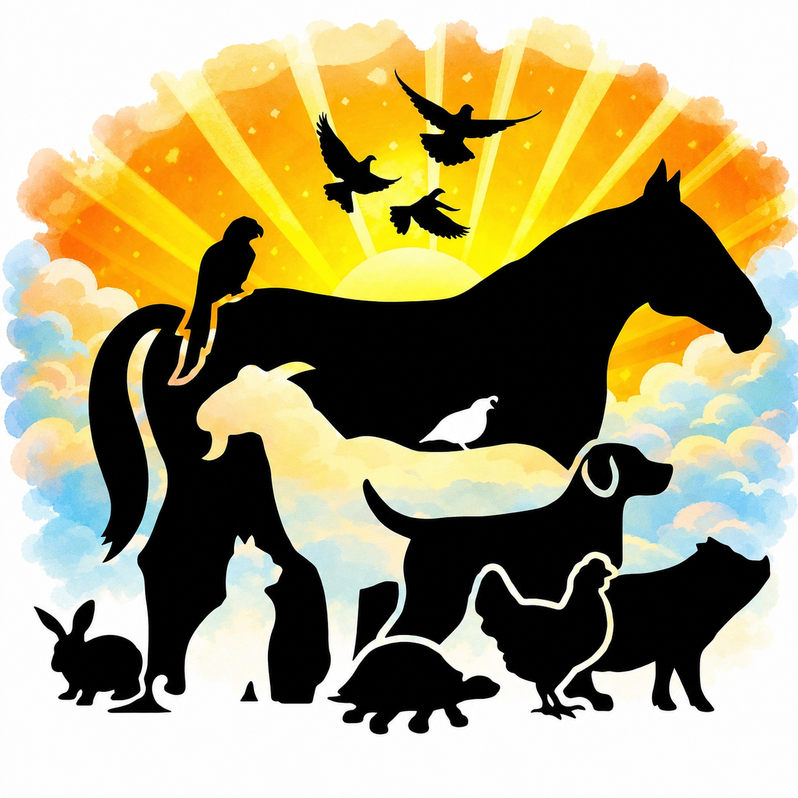
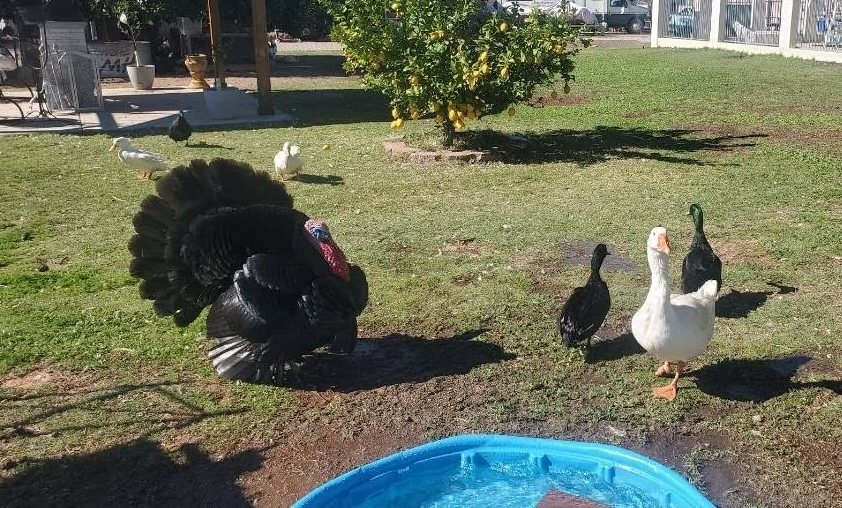

Dog
Daisy
Affectionate, attentive, and ready for a patient home where she can stay close to her people.
Meet Daisy →
Crystal'sCRITTER HAVENRESCUE • REHAB • RELEASE • SANCTUARY DonateAnimal emergency?
These instructions are for non-dangerous wildlife. Do not approach or handle an animal that could injure you.
Mesa, Arizona • Established 2018
From horses to hummingbirds, every animal deserves compassion, skilled care, and the chance to heal.

Rescue • Rehab • Release • Sanctuary
Founded in Mesa in 2018, Crystal's Critter Haven is a volunteer-operated nonprofit providing individualized care for wild and domestic animals, with a special focus on medical cases and newborn animals.
Meet Crystal & Read Our StoryCommunity-powered care
Your gift helps provide food, formula, medical supplies, safe habitats, transportation, and around-the-clock care.